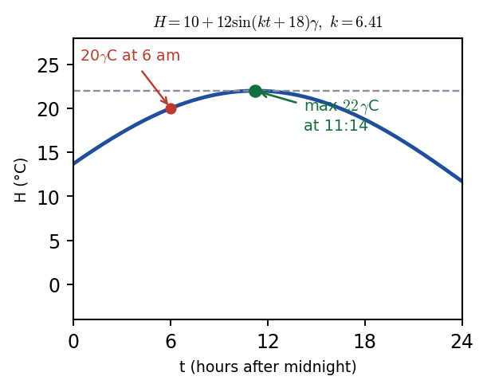

Harry → Phuc • 10 July 2026 tutorial
P2 WMA12/01 — May 2024 — Q8Q8 · Trig equation and a sine temperature model

The greenhouse temperature model \(H=10+12\sin(kt+18)^{\circ}\). Maximum at \(\sin=1\) gives \(H=22\) °C; the sine curve oscillates between \(H=-2\) and \(H=22\).
Part (i) · Solve \(5\sin x\tan x+13=\cos x\) for \(0<x\le\pi\)[5] · worked in lesson (s.f. fix)
Hide workingStrategy
Replace \(\tan x=\frac{\sin x}{\cos x}\), multiply through by \(\cos x\), and use \(\sin^{2}x+\cos^{2}x=1\) to form a quadratic in \(\cos x\).
Working · substitute \(\tan x\)
\[ 5\sin x\cdot\frac{\sin x}{\cos x}+13=\cos x \;\Rightarrow\; \frac{5\sin^{2}x}{\cos x}+13=\cos x \]
Working · multiply by \(\cos x\) and use identity
\[ 5\sin^{2}x+13\cos x=\cos^{2}x \;\Rightarrow\; 5(1-\cos^{2}x)+13\cos x=\cos^{2}x \]\[ \Rightarrow\; 6\cos^{2}x-13\cos x-5=0 \]
Working · factorise and solve
\[ (3\cos x+1)(2\cos x-5)=0 \;\Rightarrow\; \cos x=-\frac{1}{3} \text{ or } \cos x=\frac{5}{2} \]Reject \(\cos x=\tfrac{5}{2}\) (out of range \([-1,1]\)).
Working · find \(x\) in \(0<x\le\pi\)
\(\cos x=-\tfrac{1}{3}\Rightarrow x=\cos^{-1}\!\big(-\tfrac{1}{3}\big)=1.9106\ldots\)
Result
\( x=1.91 \) radians (to 3 s.f.)
Sense check
\(\cos(1.91)\approx-0.332\approx-\tfrac{1}{3}\) ✓. The answer is in the range \(0<x\le\pi\) (second quadrant, where cosine is negative).
Phuc's slip (recorded) — significant figures: Phuc gave \(1.911\) (4 s.f.). The question asks for 3 s.f. \(\Rightarrow 1.91\). Harry: underline "3 s.f." and "radians", then tick them off after solving.
Answer corrected from video ledger: A Gemini "reconstruction" used a different equation and gave \(0.927\). The official equation \(5\sin x\tan x+13=\cos x\) gives \(\cos x=-\tfrac{1}{3}\), \(x=1.91\) rad (MS). This matches the real lesson feedback.
Part (ii)(a) · Find all possible \(k\)[4] · worked in lesson (mode fix)
Carry-in\(H=10+12\sin(kt+18)^{\circ}\); \(H=20\) at \(t=6\); \(0<k<20\). The angle \((6k+18)^{\circ}\) is in degrees.
Hide workingStrategy
Substitute \(H=20,\ t=6\) into the model, isolate the sine, take \(\sin^{-1}\) in
degrees mode, find both solutions for the angle, then solve for \(k\).
Working · substitute
\[ 20=10+12\sin(6k+18)^{\circ} \;\Rightarrow\; \sin(6k+18)^{\circ}=\frac{10}{12}=\frac{5}{6} \]
Working · arcsin (in degrees)
\[ (6k+18)=\sin^{-1}\!\left(\frac{5}{6}\right)=56.443\ldots^{\circ} \text{ or } 180-56.443\ldots=123.556\ldots^{\circ} \]
Working · solve for \(k\)
\(6k+18=56.443\Rightarrow 6k=38.443\Rightarrow k=6.407\ldots\)
\(6k+18=123.556\Rightarrow 6k=105.556\Rightarrow k=17.592\ldots\)
Result
\( k=6.41 \) or \( k=17.59 \) (to 2 d.p.)
Sense check
Both values are in \(0<k<20\). Check: \(\sin(6\times6.41+18)^{\circ}=\sin(56.46)^{\circ}\approx\tfrac{5}{6}\) ✓.
Phuc's slip (recorded) — calculator mode: Phuc's calculator was in radians, giving a wrong \(\sin^{-1}(5/6)\approx0.985\). The model's \((6k+18)^{\circ}\) is in degrees. Harry: decide degrees vs radians per question and check the calculator mode.
Part (ii)(b) · Maximum temperature[1] · worked in lesson (unit fix)
Carry-in\(0<k<10\) so take \(k=6.41\). Maximum of \(\sin\) is 1.
Hide workingStrategy
The maximum of \(\sin(\cdots)\) is 1. Substitute into the model.
Working
\[ H_{\max}=10+12(1)=22 \]
Result
\( 22\,^{\circ}\mathrm{C} \)
Sense check
The answer is a temperature, not an angle. Write the unit \(^{\circ}\mathrm{C}\).
Phuc's slip (recorded) — missing unit: Phuc gave the correct value but omitted \(^{\circ}\mathrm{C}\). Harry: a temperature is not an angle — write the unit.
Part (ii)(c) · Time of day of maximum[2] · worked in lesson
Carry-in\(k=6.41\) from (a). Maximum when \(\sin(6.41t+18)^{\circ}=1\), i.e. \(6.41t+18=90^{\circ}\).
Hide workingStrategy
Set the sine argument to \(90^{\circ}\) (where \(\sin=1\)), solve for \(t\) in hours, then convert to a clock time to the nearest minute.
Working · solve for \(t\)
\[ 6.41t+18=90 \;\Rightarrow\; 6.41t=72 \;\Rightarrow\; t=\frac{72}{6.41}=11.232\ldots \text{ hours} \]
Working · convert to clock time
\(11.23\) hours after midnight = 11 hours + \(0.23\times60=13.8\) minutes \(\approx 14\) minutes.
Result
\( 11\!:\!14 \) (to the nearest minute)
Sense check
\(t=11.23\) h is 11:14 am. The question asks for "time of day" to the nearest minute, not a decimal hour.
Phuc's slip (recorded) — did not finish: Phuc "lost confidence" and used \(0.985\) (the radian value from his earlier mistake) instead of \(k=6.41\). He stopped at a decimal hour. Harry: use the found \(k=6.41\); convert to a clock time and round to the nearest minute.